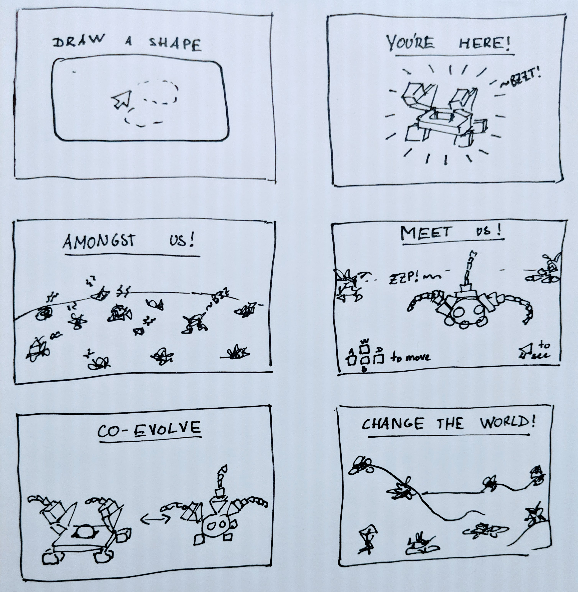

The topic chosen for this project is an exploration of the notion of presence, which leads to the project being titled "HERE". Within and of itself, a person emanates their presence when standing in front of another. The biological body is thus the primary and most recognizable vessel of a presence. However, a presence can inhabit a variety of objects or images. The presence of the dead, for example, have been described as embodied in the ashes of the body that they previously inhabited, or in sentimental objects, or even in the air. Feeling the presence of the dead have led to portraying them as spirits or ghosts. Divine presence is also one that is independent of a physical body. It is a presence that can be felt, despite not being seen. It is a presence that one can talk to and expect to be heard, without necessarily receiving an answer. A presence can be often imbued in objects of sentimental value, which leads to their personification. Here, the identity of the presence defined by the object itself, rather than an exterior being. Personified objects have a stronger presence than those that are not due to their relationship with their owner. Looking at the night sky often makes one wonder if there are any other presences in the universe apart from the ones on Earth. One can wonder if those other presences are already aware of our existence and are observing us. Though this type of presence is not necessarily felt, it might be one that some might be longing for. It is difficult to characterize what one feel as being a presence. However, it might be safe to say that human beings desire to be surrounded by them and be amidst them. There is a longing to not be alone in the cosmos. There is a desire for other beings to exist and for them to be aware of their existence and ours.
The networked space that I would hope to achieve is a platform where one can spawn a unique artefact that can stand for them, i.e. reflect their presence, in this online space. For example, it could be an abstract 3D model in the shape of a drop or a wave pattern or a mandelbulb. This model will also emit sound, as to strengthen its presence. It is paramount for this creation to not reflect anything from their identity (age, location, gender, physical appearance). Many times, an online presence relies on the identity of a person behind it, rather than on the existence of the person itself. The representation of a person online thus becomes a list of facts or actions. With the 3D model approach, I wish to put every visitor of the platform to the same level, to be nameless and unidentified, because those factors should not hinder one’s ability to be here, to be present. To start creating their artefact, I would wish for the user to give a sign of their bodily presence. It is a way to transcend their existence from the physical world to the digital. It could be done with the camera or the microphone, though those are quite revealing of a person’s identity. Another method would be to take a user’s movement since a body is made to move. Drawing a line using the mouse will determine the shape of the model. Then, the user’s model will be thrown into a world containing multiple other ones. The combination of the unique sound frequencies of each model will create the background noise of that pool. The user will be able to navigate that pool and explore the models created by other people. The 3D model will begin to evolve from physically interacting with other models or spending time in the space. Its shape and colors might change, and it might start emitting other sound frequencies. A model that is not “online” anymore might either be removed from the world or just be greyed out, be colorless and not emit any sound but still be there, like a spirit.
This space will allow a user to exist in an alternate manner, to show their existence to others and to be aware that others exist. It is a space that allows interaction between users in a way that affects and evolves not only both parties, but the world they are in as well. Users might choose whom they want to interact with and whom they want to evolve towards. They might agglomerate into groups or wish to remain alone. This space might allow for collaborations to help change the world in their desired way. It is to insinuate that a presence has impact and is felt by others, without it doing any action apart from existing in a place rather than another. One will also be able to view the whole world from above as to physically see its state and all its beings all at once. This will allow the user a better understanding that they are present amidst this world.
Some inspiration was taken from “Google Earth”, a website where one can see and explore practically the whole globe in tremendous detail. One can search a specific address using the given search bar. They can also rotate, move and zoom in/out of it. Practically every address or name of a space is documented and could easily be found. Google earth also has a feature called “Street View”. It is a feature that allows to view a place not from above, like a satellite camera would, but from a first-person perspective. This allows a more detailed view of the environment and a better immersion into the familiar or unfamiliar ones. Very often, when one discovers the globe for the first time, they are prone to look for the place they live in. A reason for this might be that that user wants to make sure that they are present on the globe, that they exist in this space. This website might also help users realize how big the earth is and how many other beings live in it. Confirming that one truly exists amidst all those people might be reassuring. It is an interesting perspective to view one’s presence in the world and realize that a part of the world is theirs.
Another similar website would be “Little Sun: Sunlight Graffiti”. The artist, Olafur Eliasson, created a solar-powered lamp and gave it to people for them to create a graffiti captured by video or long-exposure photography. Every photo can be found on this website and is arranged onto a sphere. However, only the light trace is kept visible, not the people in it. The light trace is animated according to how it was drawn by each person. Once agglomerated onto a sphere, all those light traces seemingly create a sun. Users can click on every light trace to see the photo that was used to make it. Additionally, participants can find their graffiti using a search bar. The goal of this project was to raise awareness of energy shortage and unequal energy distribution. It is meant to promote renewable energy sources, such as solar energy, and how it can allow for a healthier and more peaceful planet, illustrated by the little sun. The artist opened a discussion over how a transition to renewable energy and the participation of individuals into the promotion and use of it is the key to save some global problems.
“Voxel Place”, by Joost Vanhoutte, constitutes website that uses an open world website that is similar to what I want to achieve. It is a space that already has a predetermined terrain, made of voxels of a variety of textures (stone, earth, sand, brick, wood, etc.). Every user that enters this world is able to either remove voxels from it or add some. Every user is given an inventory that contains a wide variety of voxel textures that one can place into the world in any amount. The user is allowed to navigate the space in a first-person type view. They can either be affected by gravity, i.e. walk on the terrain, or fly in the air and move freely. The place is a sandbox where people can play and create things. There is a multitude of people that created some voxel art of well-known characters. Others have created a banner with a country’s flag, Others have created either houses or letters spelling a message. This website shows a desire for people to leave their mark, prove they were present in this space. Some visit the world to observe what others have created. There is a sense of reassurance seeing that other people exist and put time into modifying a world even though they remain anonymous.
There are several ways in which the networked space I would hope to achieve is different from the aforementioned ones. “Google Earth” is a static environment. One does not expect it to change during their visit, or because of their visit. It is a website where one is meant to find information, not to provide or modify it. Additionally, the data taken to create the globe is not provided by people that did it of their volition but was captured by dedicated machines. In the network that I will create, the users will directly impact the space they’re in. However, similarly to “Google Earth”, the users can navigate the world both in first person view and from above. The world created in “Little Sun” can only be navigated from above. However, the world was shaped by the people that participated in it. One can find the artefact they have created and observe how it completed the world. Nonetheless, new artifacts cannot be created, and they don’t interact with themselves either. This world thus remains mostly static and depicts traces of past presences. The final website, “Voxel Place”, offers the possibility of the user to explore the world in first-person view. The user can modify the world in real time and is able to perceive other connected users to do so too. However, although the users change the world’s landscape, they are not evolving each other.